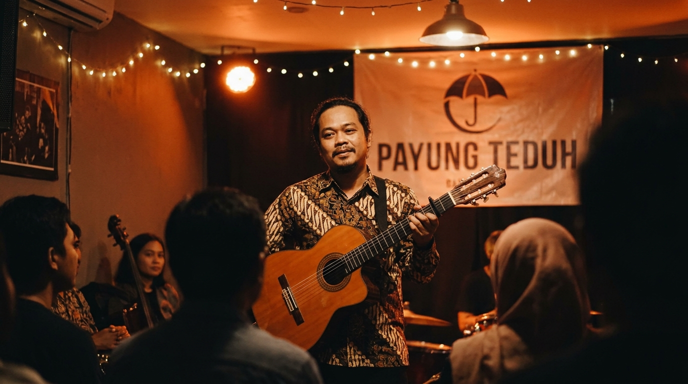
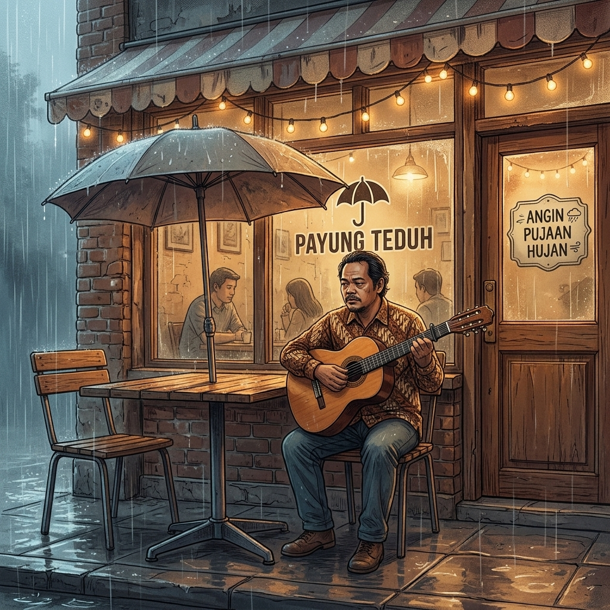
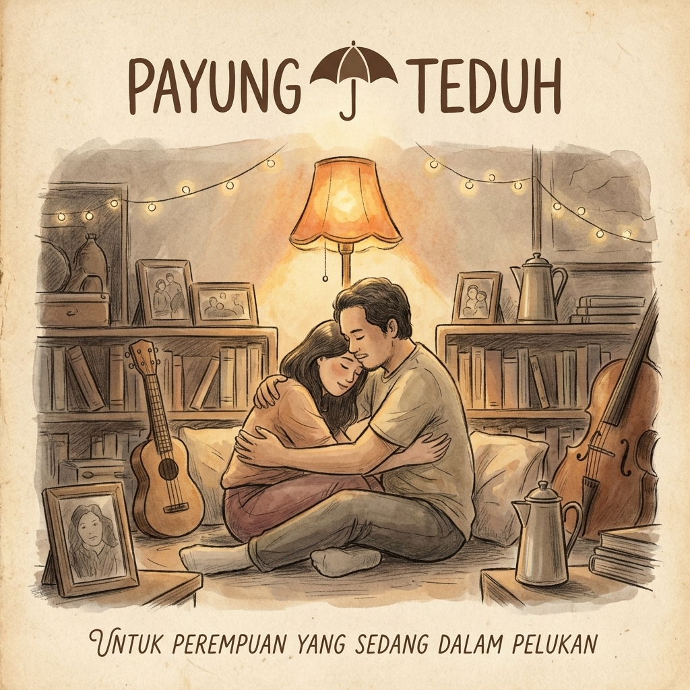

Payung Teduh adalah grup musik independen asal Indonesia yang dikenal luas dengan ciri khas aliran musik yang memadukan unsur folk, keroncong, dan jazz akustik. Dibentuk pada tahun 2007 oleh Is (Mohammad Istiqamah Djamad) dan Comi (Comi Aziz Kariko), band ini awalnya bermula dari komunitas teater sebelum akhirnya melahirkan berbagai karya puitis yang lekat dengan suasana sendu dan romantis.
Nama Payung Teduh sendiri mencerminkan nuansa keteduhan dan kenyamanan yang ingin disampaikan melalui lirik-lirik puitis serta petikan gitar klasik yang syahdu. Berbagai lagu ikonis mereka sukses mencuri hati penikmat musik tanah air dan menjadi bagian penting dalam perkembangan kancah musik indie Indonesia.
2.5M
Spotify Followers
1.8M
Monthly Listeners
3
Official Full Albums
Discography

Angin Pujaan Hujan
Listen Now